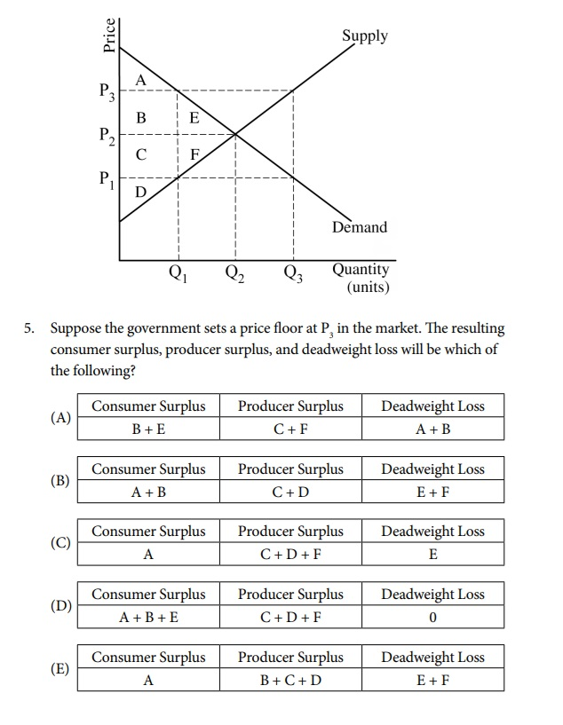
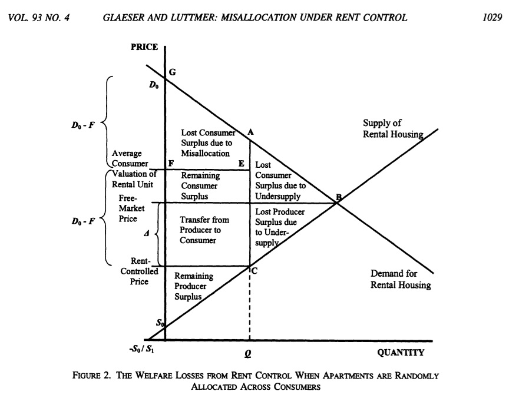

I'm an **AP Computer Science student**, and as part of developing my Python skills, I coded up a fun word-swap game.
The **Word Ladder game** challenges you to transform one word into another, changing **one letter at a time**. Each intermediate word must be a real word. For example, you can go from CAT → COT → DOT → DOG, but not CAT → CAG → DAG → DOG because "CAG" and "DAG" are not real words.
🎯 The **game gets harder as you go**! - Your first puzzle might only require **two or three** steps. - As you solve more, the game will **increase the difficulty** by selecting word pairs that require **longer transformation chains**. - Eventually, you'll need to find **5, 6, or even 10-step transformations!**
This game runs in Python. You can download the script and the necessary word list below:
1️⃣ Make sure you have **Python 3 installed** on your computer. 2️⃣ Download the **Python script** and the **dictionary file** above. 3️⃣ Place both files in the same folder. 4️⃣ Open a **terminal or command prompt** and navigate to the folder. 5️⃣ Run this command:
python word_swap_jshoag.py
You can also try the game below:
The game will start in your terminal, and you can enter words to play.
I am attempting to organize a trip to visit Mexico City and learn more about the history and strength of Mexico's Jewish community. The trip would take place in late May. If you are interested in participating or in joining a group of students in Cleveland focused on Hispanic-Jewish heritage, please contact me at jacob.shoag [at] fuchsmizrachi.org.
I used a NumWorks calculator during my AP Statistics exam and found it to be the best for its ease of use and understanding. Below are some Python scripts I created to help with key statistical concepts:
When I was studying for the AP Micro exam in 8th grade, I had a hard time understanding the review book's explanation of deadweight loss for price floors and price ceilings. I assumed that it was my mistake, but it's actually an error in the College Board's treatment of the subject. Take a look at the following question (from p. 135 here College Board Course and Exam Description). An image is below:
The College Board says the correct answer is E. That assumes, though, that even with a price floor or a price ceiling, the highest value purchasers or sellers will still get to transact. That isn't necessarily the case. A paper by Glaeser and Luttmer (2003) (link to paper) shows that if things are allocated randomly with price controls, then the deadweight loss could be much higher!
What should you do? Well, I recommend just answering things the way the College Board would like you to answer. However, if this confused you like it confused me, it's helpful to know you're not wrong. The College Board's solution depends on a really non-obvious assumption that is probably incorrect.